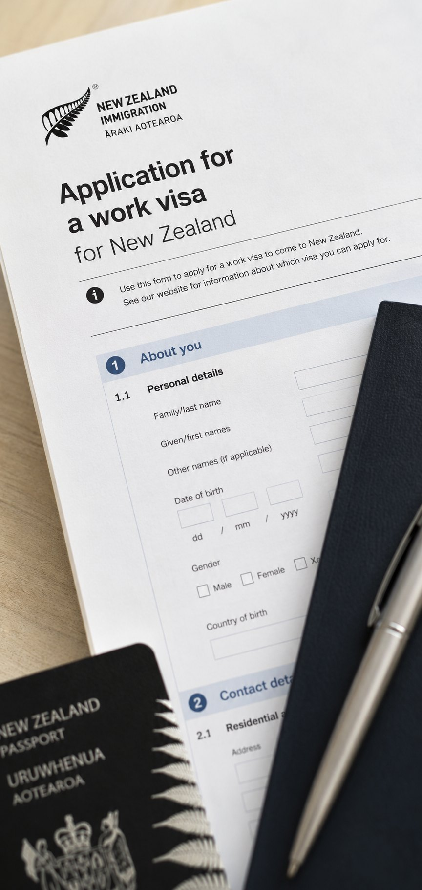

Immigration
& visas
How visas work for healthcare professionals, the main pathways, plainly explained, and where each one leads.
Three things you can do right now
Pick the one you need now. The full guide is underneath for when you have a cup of tea and half an hour.
Price up the move
Visa fees, flights, shipping and the first month here, worked out for your household rather than a generic average.
Open the cost calculator I want the official immigration linksGet the official links
Immigration New Zealand, the Green List and the forms you’ll actually need, gathered in one place.
Open the directory I want someone to sequence it with meTalk it through
We explain the routes and keep your file moving. The decisions stay with Immigration New Zealand, but you won’t be guessing at the order.
Ask us about your visaThe visa usually follows the job, not the other way around
Reviewed July 2026 · checked against Immigration New Zealand’s current published guidance. Immigration rules change, always confirm at the source
Immigration is where most people expect the first hurdle. In practice it tends to fall into place once you have a job offer from a New Zealand employer — the offer is the key that unlocks the visa.
New Zealand has deliberately built fast, welcoming routes for the skills it needs most, and healthcare is high on that list. The Green List sets out in-demand roles with streamlined pathways to residence, and many of the professions we place are on it. That changes the whole feeling of this step: not a battle to be allowed in, but a country making it straightforward for you to stay.
One honest note up front: Ethicare are recruitment specialists, not licensed immigration advisers. What we offer is hard-won familiarity with these pathways and employers who are accredited to support visas, and where you need formal immigration advice, we’ll make sure you get it from the right people.
Three pieces that move together
Registration, your job offer and your visa aren’t a strict queue, they progress alongside one another. Holding all three in mind from the start is what keeps the move smooth.
A job with an accredited employer
Most work visas require a job offer from an employer accredited by Immigration New Zealand. The employers we work with hold that accreditation, which is what makes the visa possible.
The right route for you
With an offer in hand, the question becomes which visa fits, a work visa to begin, or, for Green List roles, often a direct route towards residence.
A pathway to residence
For many healthcare roles the destination isn’t a temporary stay but residence, the security of putting down roots, which is exactly what most families are really after.
The Green List, in plain terms
The Green List names the roles New Zealand is actively short of. If your profession is on it the pathway is faster and clearer, and it comes in two tiers depending on the role.
Straight to Residence
For the most in-demand roles, you can apply for residence directly with a qualifying job offer, rather than working for years first. It’s the most secure footing you can arrive on.
- Residence application from the start
- Includes your partner and dependent children
- The strongest sense of permanence from day one
Work to Residence
For other Green List roles, you work in the role for a set period and can then apply for residence. You arrive on a work visa, settle in, and the residence pathway opens up as you go.
- Begin on an Accredited Employer Work Visa
- Apply for residence after the qualifying period
- Your family comes with you from the start
Which tier is my profession?
The Green List is set by Immigration New Zealand and reviewed periodically, so roles and tiers can change. The honest, current answer for your specific profession is something we’ll confirm with you directly, and you can always check the source at immigration.govt.nz.
The visas you’re most likely to meet
There are several visa types, but for healthcare professionals moving with Ethicare, a handful come up again and again. Here’s what each one is, in everyday language.
Accredited Employer Work Visa
The main work visa, tied to a job offer from an accredited employer. For many people it’s how they first arrive and begin working, with a residence pathway following on.
Straight to Residence Visa
For eligible Green List roles with a qualifying job offer: apply for residence directly, bringing your partner and children with you.
Work to Residence
Work in a qualifying Green List role for the required period, then apply for residence. A settled, staged route to putting down roots.
Partner & dependent visas
Your partner can often apply for a work visa and your children for student visas, so the whole family moves and settles together rather than apart.
Visa categories, criteria and names are set by Immigration New Zealand and can change. This is an orientation, not immigration advice. Always confirm current detail at immigration.govt.nz or with a licensed adviser.
Bringing your partner and children
One of the quiet reassurances of these pathways is that they’re built for families, not just individuals. You won’t be heading out alone to send for everyone later, you move together.
Your partner can usually work
Partners of skilled migrants are often eligible for an open work visa, free to work for any employer. For many couples that’s a huge relief: two careers, not one on hold.
Your children can study
Dependent children can generally study here, often as domestic students at state schools depending on your visa. Enrolment is straightforward and schools are used to welcoming new arrivals.
Residence covers everyone
Where your pathway leads to residence, it’s a family residence, the security of a shared future here, with the same rights and the same roots for all of you.
How the process usually unfolds
Every case differs, but the path from offer to arrival tends to follow the same broad shape. Seeing it laid out takes most of the worry out of it.
Secure a job offer
An offer from an accredited employer is the foundation everything else rests on. This is where we focus first, because once it’s in place the visa options become clear.
Confirm your pathway
Together with the right advice, you identify the visa that fits: work visa, Straight to Residence or Work to Residence, based on your role, the Green List and your circumstances.
Gather your evidence
Passport, qualifications, job offer, registration progress, and health and character checks such as medicals and police certificates. Starting these early avoids the most common delays.
Submit the application
Your application, and your family’s, goes to Immigration New Zealand with the relevant fees. From here it’s an assessment and processing period.
Approval & planning your arrival
Once granted, you can firm up flights, timing and the practical move. This is where Preparing to move takes over from the paperwork.

People brace themselves for the visa to be the hardest part, and for healthcare professionals it’s so often the smoothest, because New Zealand has gone out of its way to make it so. My one piece of advice is to take the health and character checks seriously and start them early; a delayed medical or a slow police certificate is what trips people up, never the welcome itself. Get the right immigration advice, lean on us for the employer side, and you’ll be surprised how quietly this step resolves.
SophieCEO & Founder, Ethicare Resourcing
What this step felt like
Three clinicians on the moment immigration stopped being an idea and became real.
“Getting the job offer was exciting. Getting the work visa approved was the moment I knew I was actually moving to New Zealand.”
“I had assumed I would need to work in New Zealand for several years before I could even think about residence. Finding out there was a direct pathway for my profession was a very pleasant surprise.”
“For me, residency meant security. I was moving my children to the other side of the world, so I needed to know there was a realistic long-term future for us in New Zealand.”
What’s worth knowing before you apply
None of these are reasons to hesitate, they’re the things that keep a visa on track rather than catching you out partway through.
Rules can and do change
Visa categories, the Green List and criteria are reviewed over time. Always confirm the current position at the source, and don’t rely on what was true for a friend a year or two ago.
Health & character checks take time
Medicals and police certificates from every country you’ve lived in can be slow to obtain. They’re routine, but they reward an early start more than almost anything else.
There are costs to budget for
Visa application fees, medicals, certificates and the levy add up across a family. They’re manageable and predictable, just plan for them from the beginning.
Get advice for anything unusual
A complex history, a past visa refusal or a health condition are all navigable, but they’re exactly when a licensed immigration adviser earns their keep. We’ll point you to one.
The things people ask us first
Do I need a job offer before I can get a visa?
For the main work and residence routes, yes, a job offer from an accredited employer is usually the starting point. That’s why we focus on securing the right role first: once the offer is in place, the visa pathway becomes clear and the rest follows. It’s far less a queue than three pieces moving together.
Can my profession get me residence?
For many healthcare roles, yes. That’s the whole point of the Green List. Some roles offer a direct residence route from the start; others a residence pathway after a period of work. Which applies to you depends on your specific profession and the current list, which we’ll check with you honestly rather than promising more than we can.
Can my partner work and my children go to school?
In most cases, yes. Partners of skilled migrants are frequently eligible for an open work visa, and dependent children can generally study here, often as domestic students depending on your visa. These pathways are designed for families to move and settle together, which is one of their real strengths.
How long does a visa take?
It varies by visa type, your circumstances and Immigration New Zealand’s processing times, so we’re wary of quoting a single figure. What we can say is that the biggest variable is usually you: how quickly your documents, medicals and checks come together. Start those early and you give yourself the best possible run.
Do I need an immigration adviser?
For straightforward cases, employers and Immigration New Zealand’s own guidance carry you a long way. For anything more complex, a licensed immigration adviser or lawyer is well worth it, and the right thing to use, since we’re recruiters rather than advisers ourselves. We’re always happy to point you towards people we trust.
Read a little deeper
Not sure which visa pathway is yours?
Tell us your profession and your situation, and we’ll talk you through the likely routes, the Green List, accredited employers and how the visa fits with your job and registration. Honest guidance, the right referrals where you need them, and no obligation.
Ethicare Resourcing · your guide to a life and career in New Zealand.